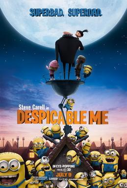
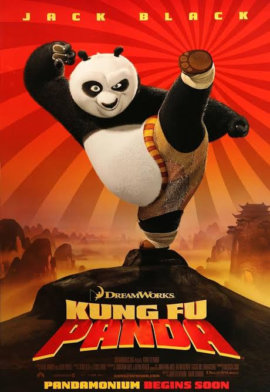

Daftar Film
Dua film animasi favorit saya yang pernah saya tonton.
Despicable Me

Kung Fu Panda

Tabel Film
| Judul | Tahun rilis | Genre | Rating | Sinopsis |
|---|---|---|---|---|
| Despicable Me | 2010 | Animasi, komedi, keluarga | 8/10 | Gru, seorang penjahat super ambisius yang berencana mencuri Bulan, namun hidupnya berubah drastis setelah mengadopsi tiga anak yatim piatu |
| Despicable Me 2 | 2013 | Animasi, komedi, petualangan | 8/10 | Gru yang direkrut oleh Liga Anti-Penjahat (AVL) untuk melacak penjahat super baru setelah ia pensiun dari dunia kejahatan dan fokus merawat ketiga putri angkatnya. |
| Kung Fu Panda | 2008 | Animasi, aksi, komedi | 9/10 | perjalanan Po Ping, seekor panda gemuk dan kikuk yang bekerja di kedai mie ayahnya, namun bermimpi besar menjadi seorang ahli kung fu. |
| Kung Fu Panda 4 | 2024 | Animasi, aksi, petualangan | 7/10 | Po yang harus pensiun sebagai Pendekar Naga (Dragon Warrior) dan bersiap menjadi pemimpin spiritual (Spiritual Leader) di Lembah Perdamaian. |